| 日付 | 2025年4月29日（火） - 2025年5月2日（金） | ||||||||
|---|---|---|---|---|---|---|---|---|---|
| 山域 | 九州の山 | ||||||||
| メンバー | 単独 | ||||||||
| 山行形態 | 3泊4日避難小屋泊、キャンプ | ||||||||
| アクセス | 電車、飛行機、バス | ||||||||
| ルート (Map1) |
|
今年のGWは8連休と長い。後半は子供の試合が入っているのだが、
前半は学校があり、親は暇である。
この機会に、かねてから行ってみたかった屋久島に行ってみることにする。
GWの1ヶ月前に計画を立て始めたが、幸い飛行機はわずかに空きがあり、
飛行機の予約だけ取って現地に向かう。
1日目
羽田空港に到着。GWで賑わっている。
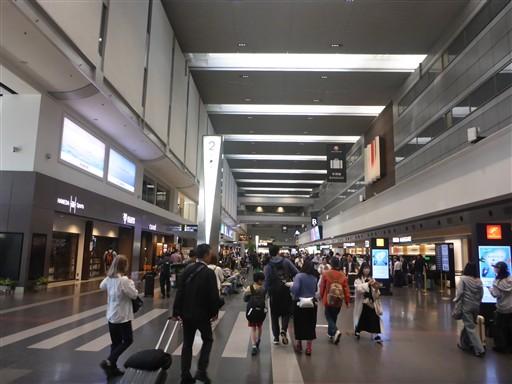
機内放送で富士山が見えると案内があった。
窓側の人が席を立ったタイミングで南アルプスを撮影。
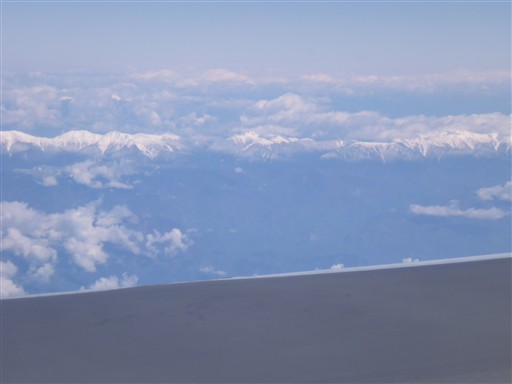
鹿児島空港に到着。2010年以来の訪問だ。
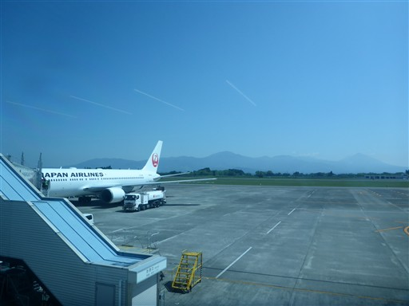
ここから小さな飛行機に乗り換えて屋久島に向かう。

この飛行機はプロペラ機。
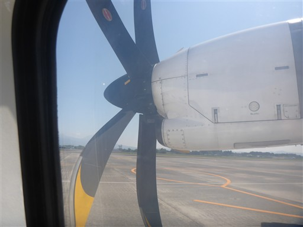
眼下に開聞岳が見える。
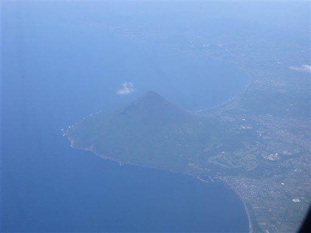
そして屋久島が見えてきた。
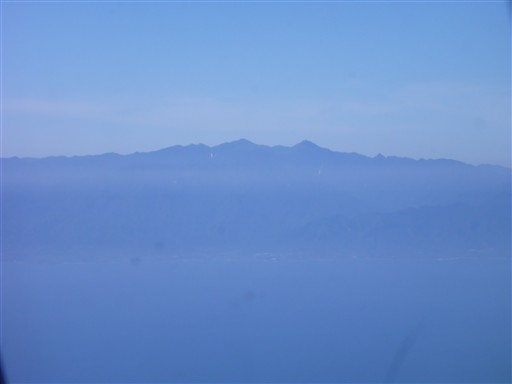
眼下の海はきれいな青色だ。
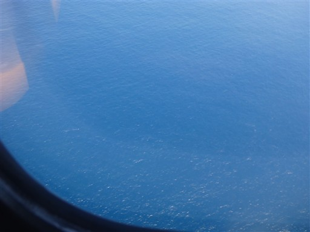
ついに屋久島に降り立つ。
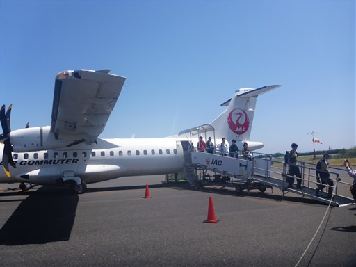
背後には山々が見える。宮之浦岳は下界からは見えないらしい。

着陸が10分遅れの11:20でバスが11:38発。
預け荷物を受け取り、急ぎバスの周遊チケットを購入する。
売店のガスカートリッジは売り切れていた。ひとまず無事バスに乗り込む。
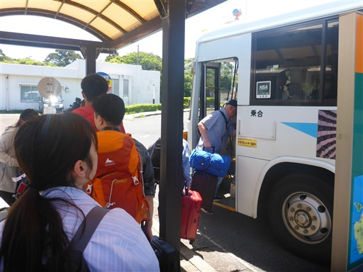
まずは腹ごしらえ。安房港近くの「かもがわ」で。
揚げたトビウオやカメノテ、刺身など屋久島名物をいただく。
これが屋久島での最初で最後の（まともな）食事になるとは、この時は思わなかった。
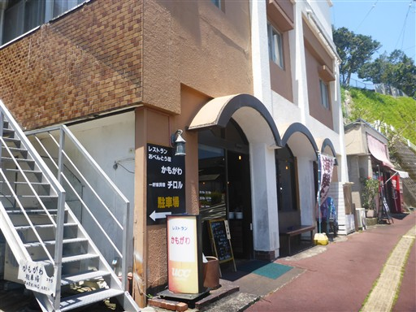
南国っぽい風景。
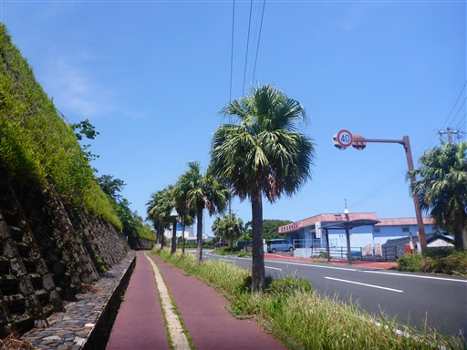
世界自然遺産屋久島の石碑。
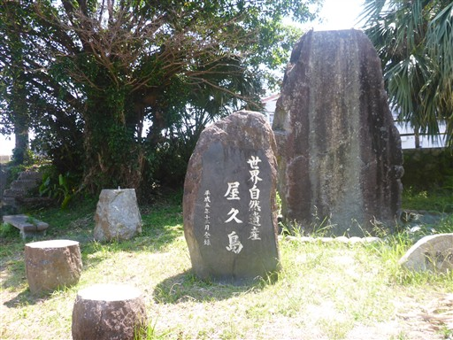
ガスカートリッジを購入するため、登山ショップに行く。無事購入。
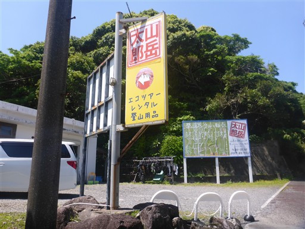
合庁前バス停で島の中心部に向かうバスに乗る。
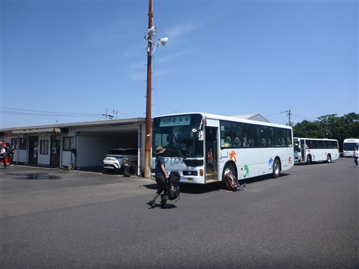
ここはバスの駐車場で、バスがたくさん並んでいる。
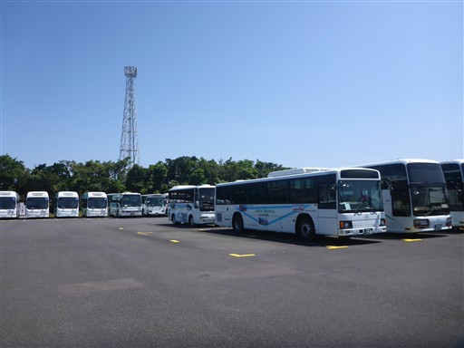
紀元杉バス停に到着。標高1240m。
バスは次々と人が乗ってきて、真ん中の席も使うほどの満車状態だった。
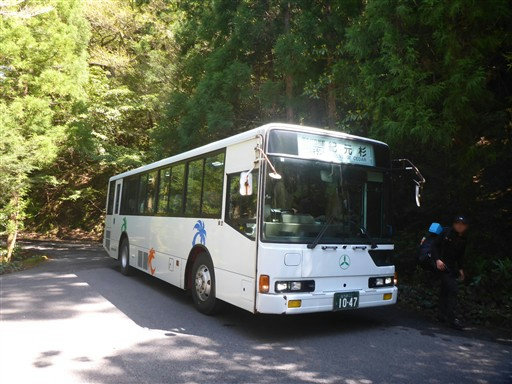
まずは紀元杉を見学。

木道が整備されていて、ぐるっと一周できるようになっている。
巨大な紀元杉。初めて見る屋久杉だ。
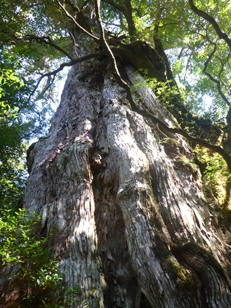
バス停に戻ってくる。ここから淀川登山口まで車道を歩く。
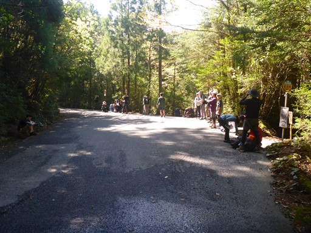
川上杉。これも立派な杉だ。
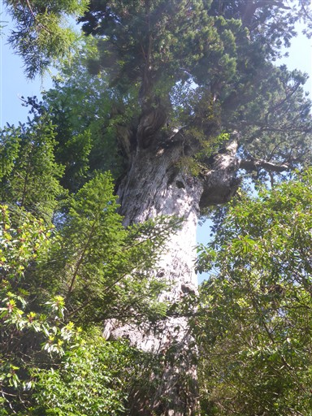
車道を歩くだけでも、周囲に大きな木はたくさん見られる。
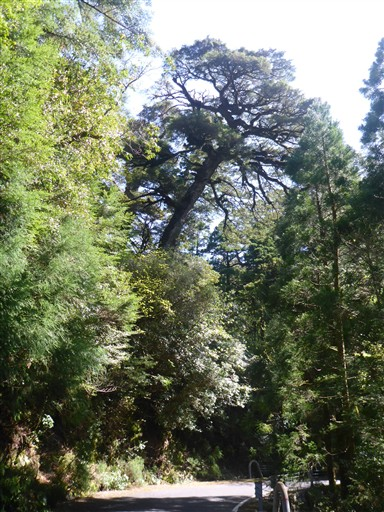
淀川登山口に到着。小さな駐車場があるが、明らかにキャパ不足だ。
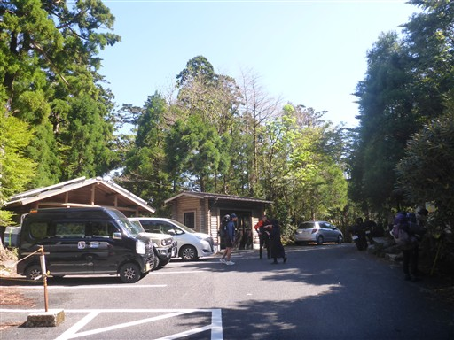
ここから登山開始。
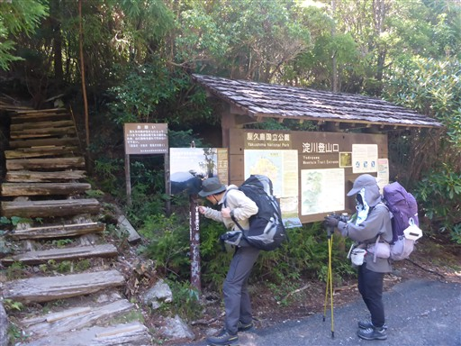
ついに屋久島の森の中を歩く。
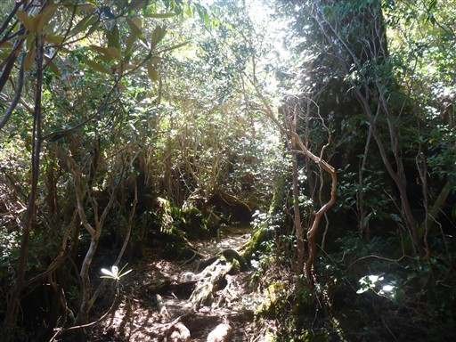
杉も、杉以外も大木があちらこちらで見られる。
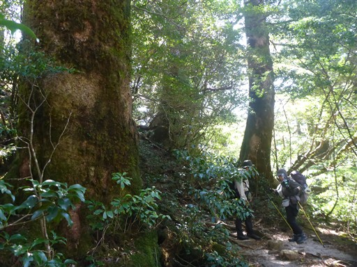
本日は晴れ。この3日間で本日が唯一の晴れ予報だ。
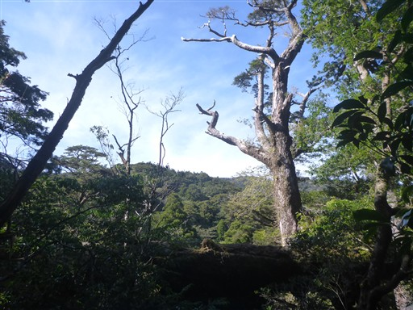
巨大な木の根。
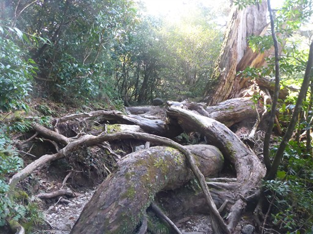
大きな倒木を潜る。
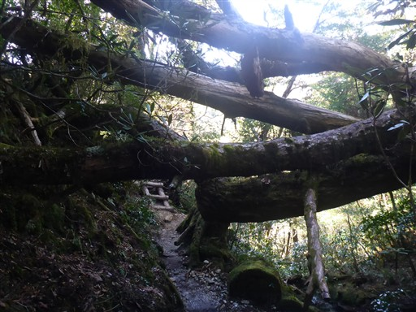
周囲には美しい森が広がる。
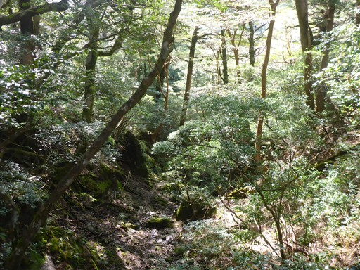
ここから世界自然遺産地域に入るらしい。
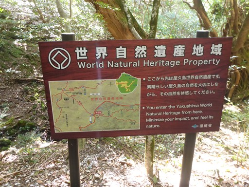
木道もあり、登山道はよく整備されている。
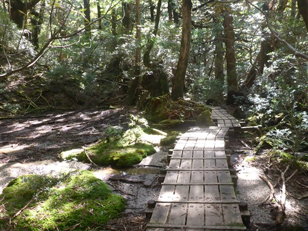
淀川小屋に到着。
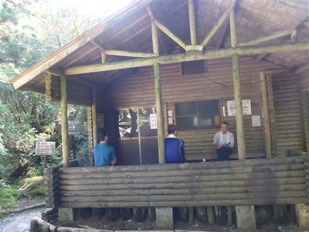
中の様子。当初はここに宿泊する予定だったが、明日以降晴れない可能性があり、
本日中に1つはピークに登って展望を楽しみたいため、ちょっと無理をして先に進むことにする。
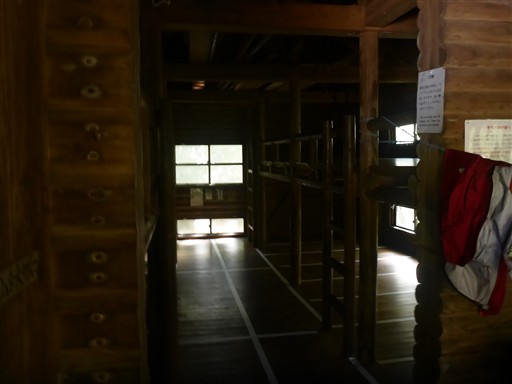
小屋の側を流れる淀川は驚くほど美しい。
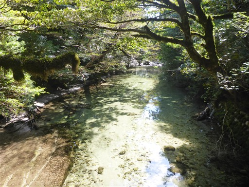
屋久島は日の入りが遅いとはいえ、小屋到着は遅くなりそうなので少しペースを上げる。
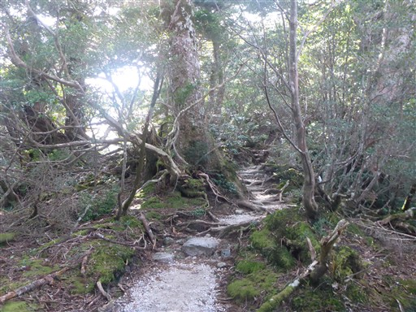
高盤岳展望台。逆光で山頂の豆腐岩が良く見えない。
今からあの山に登る予定だ。
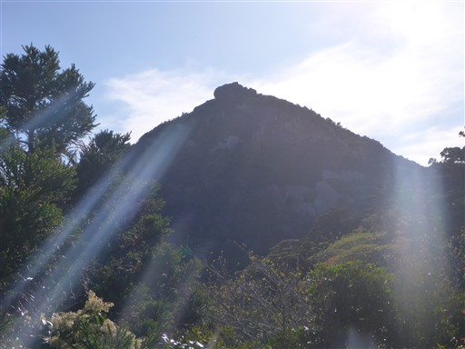
展望台に到着。屋久島中心部の山々が見渡せる。真ん中左のピークは黒味岳だろうか。
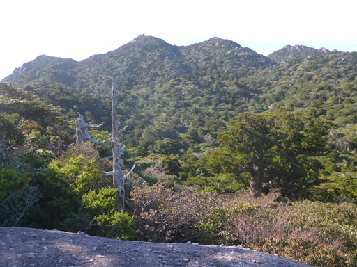
遠くの方には海が見える。
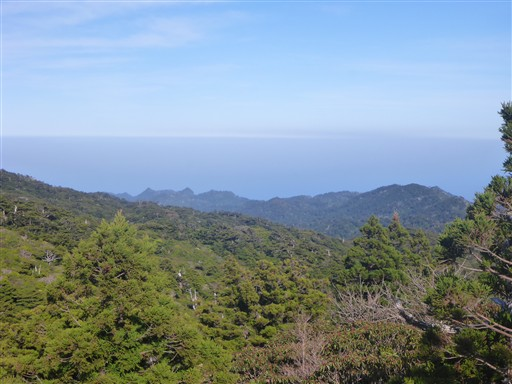
森の中に巨石が点在する不思議な景観だ。
屋久島中心部の見たかった景色が見られて満足だ。

再び森の中を歩いていく。
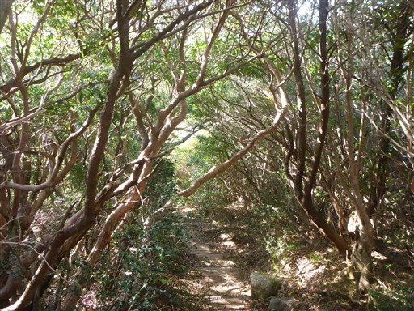
小花之江河に到着。小さな湿原だ。
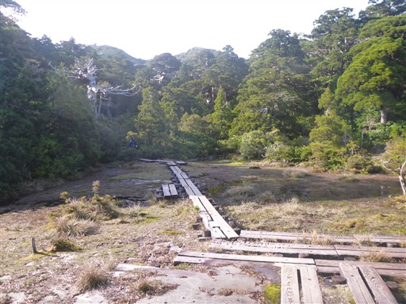
木道が水没しそう。
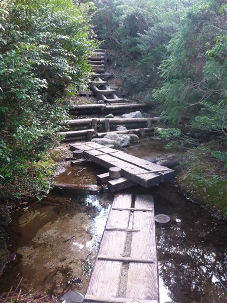
すぐに花之江河に到着。
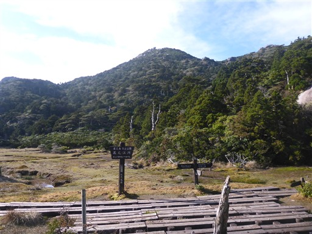
こちらは先ほどよりも大きな湿原。
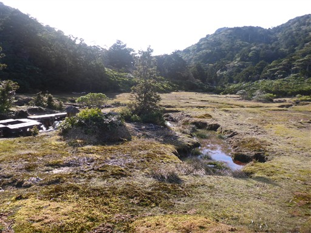
小さな祠が祀られている。
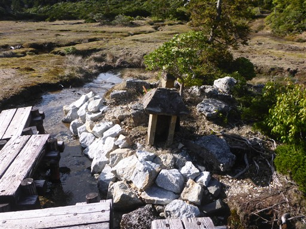
ここから高盤岳を往復する。ザックはここにデポする。
ロープが張られているが、未整備のため初心者が入らないようにするためのようだ。
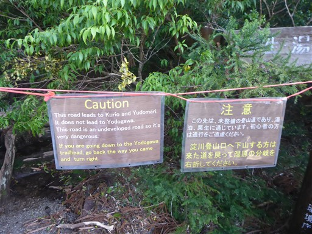
登山道は十分整備されているように見える。
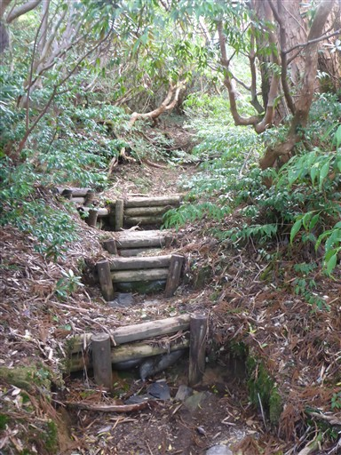
と思ったら、道はどんどん悪くなっていく。細かったり水没していたり。
登山道ではあるが、確かに近年整備はされていないようだ。
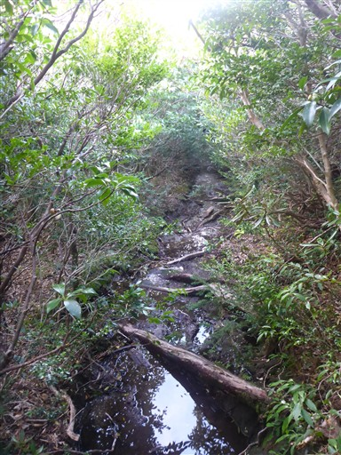
目指す高盤岳が目の前にそびえる。
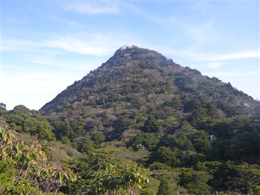
一本橋で沢を渡る。
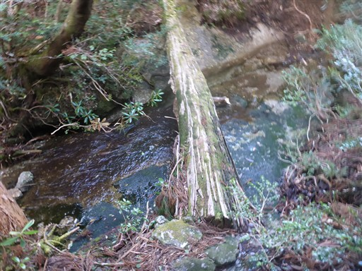
生い茂る木を避けながら、分かりにくい登山道を登っていく。

高盤岳山頂に到着。標高1711m。
山頂の豆腐岩は大きすぎて写真に入りきらない。
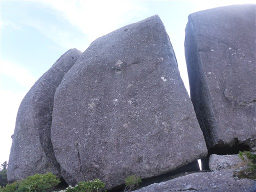
この岩には登ることができず、岩以外の部分は結構狭いので
あまり爽快感はない山頂だ。山頂標識も見当たらない。
それでも豆腐岩をぐるっと周って360度の展望が広がる。

黒味岳を中心に屋久島中心部の山々。

海もよく見えている。17時を過ぎたが太陽はまだ高い。
遠くの尖がった山は七五岳だろう。
晴れの屋久島の山々の展望を満喫することができた。
これで明日雲にまかれても後悔はない。もちろん晴れても後悔はない。
時間が遅いので早々に下山を開始。
木が木を吐き出しているように見える。
アセビの白い花があちらこちらに咲いている。
花之江河に戻ってくる。ここから石塚小屋まで移動。
メインルートから少し外れたところにあるので、ちょっと不便な小屋だ。
先ほど登った高盤岳と豆腐岩がきれいに見えている。
こちらの道も少し険しい。高盤岳への道ほどではないが、
メインルートではないため道のレベルは少し異なる。
巨大な岩が散在している。
岩の上を水が流れているのでここで水を汲む。
ここが小屋から一番近い水場だ。
石塚小屋に到着。18:22と遅い到着だが、明るいうちに無事辿り着けた。
本日は10人弱の宿泊で、混雑ではないがそこそこの人数だ。